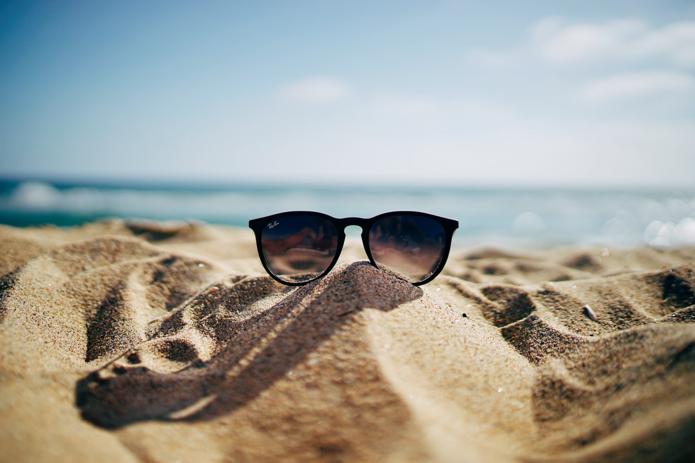

A viagem à praia é uma experiência incrível, cheia de emoções e momentos inesquecíveis. Durante as férias, é possível desfrutar de belas paisagens, praticar esportes aquáticos e relaxar na areia dourada. Neste artigo, vamos explorar os destaques dessa aventura.
Durante a estadia na praia, há uma infinidade de atividades para aproveitar, como:
A praia oferece uma paisagem deslumbrante e uma atmosfera tranquila. É um lugar perfeito para admirar:
"A vida é como uma onda do mar, e precisamos estar prontos para surfar." - Autor desconhecido
A praia também é um lugar perfeito para reflexão e relaxamento. Sentar-se na areia, ler um bom livro e aproveitar o sol proporciona momentos de paz e tranquilidade. É uma oportunidade de escapar da rotina e recarregar as energias.
A viagem à praia é uma experiência enriquecedora, repleta de atividades emocionantes, beleza natural e momentos relaxantes. É uma oportunidade de se conectar com a natureza, criar memórias duradouras e aproveitar o melhor que a vida tem a oferecer.
Agora você pode ver como é possível usar diferentes elementos de formatação do Markdown para criar uma redação com destaque visual e clareza. Lembre-se de que o Markdown é uma linguagem de formatação simples e versátil, amplamente utilizada para escrever documentos, artigos e até mesmo páginas da web.
